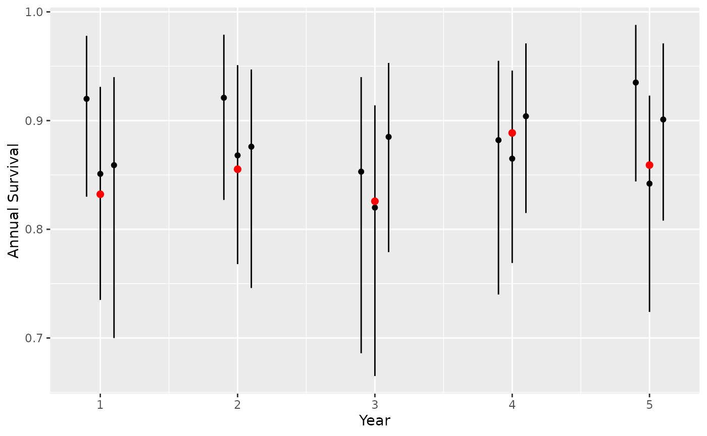
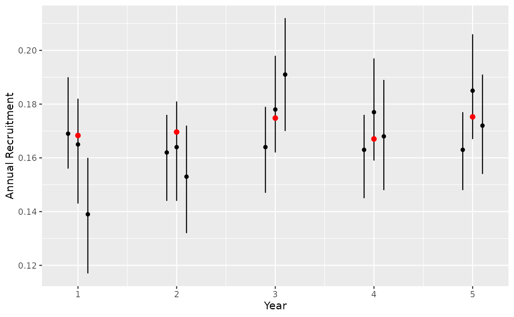

Recruitment and survival data from
bbs_simulate_caribou() are formatted to be used as input
for bboutools model fitting functions.
The ability of different models to recover the ‘true’ annual survival and recruitment rates can be assessed for any number of simulations.
To demonstrate, first set up a stable population with annual variation in adult female survival and recruitment and generate three simulated datasets for illustration. Variation in recruitment could also be achieved by adding annual variation calf survival.
set.seed(1)
nyear <- 5
survival <- bbs_survival_caribou(
survival_adult_female = 0.85,
annual_sd_adult_female = 0.2,
month_sd_adult_female = 0.1,
survival_calf_female = 0.5,
yearling_effect = 0.05,
nyear = nyear
)
fecundity <- bbs_fecundity_caribou(
calves_per_adult_female = 0.7,
annual_sd = 0.1,
trend = 0.05,
nyear = nyear
)
# use stochastic=FALSE to use deterministic matrix multiplication
population <- bbs_population_caribou(survival,
fecundity = fecundity,
adult_females = 500,
stochastic = FALSE
)
nsims <- 3
data <- bbs_simulate_caribou(
survival = survival,
fecundity = fecundity,
nsims = nsims,
adult_females = 500,
proportion_adult_female = 0.65,
month_composition = 9L,
collared_adult_females = 30,
group_size = 6,
group_coverage = 0.5
)The true annual adult female survival rates can be calculated from the projected population as the product of the monthly survival rates for each year
saf <- survival$eSurvival[, , 3]
nyear <- dim(saf)[2]
saf_annual <- vector(length = nyear)
for (yr in 1:nyear) {
saf_annual[yr] <- prod(saf[, yr])
}
saf_annual
#> [1] 0.8322252 0.8552494 0.8257730 0.8886147 0.8590784The model coefficient estimates can then be compared to the true survival rates.
library(bboutools)
library(purrr)
library(dplyr)
library(ggplot2)
# fit model for each simulation
# we set year_start = 1 because we assume the projected population is for the biological year
nsims <- length(data)
fits_survival <- map(1:nsims, function(x) {
survival <- data[[x]]$survival
bboutools::bb_fit_survival(
data = survival,
year_start = 1L,
quiet = TRUE, nthin = 200,
niters = 500
)
})Check that all models have converged
Plot predicted survival estimates to assess whether 95% CI contains true value.
actual <- tibble(CaribouYear = 1:nyear, actual = saf_annual)
# predict annual survival
preds <- map_df(seq_along(fits_survival), function(x) {
pred <- bboutools::bb_predict_survival(fits_survival[[x]])
pred$sim <- x
pred
})
gp <-
ggplot(data = preds) +
geom_pointrange(aes(x = CaribouYear, y = estimate, ymin = lower, ymax = upper, group = sim), size = 0.2, position = position_dodge(width = 0.3)) +
xlab("Year") +
scale_y_continuous("Annual Survival") +
geom_point(data = actual, aes(x = CaribouYear, y = actual), color = "red", size = 2)
gp
The true recruitment rates can be calculated from the projected population at each composition survey month. First calculate calf-cow ratio and calculate DeCesare adjusted recruitment to match bboutools predictions.
month_composition <- 9L
survey <- seq(1, 12 * nyear, by = 12) + month_composition
x <- population[, survey]
# calves per adult female
caf <- vector(length = nyear)
for (i in seq_len(ncol(x))) {
# female calves + male calves / female yearlings + female adults
caf[i] <- (x[1, i] + x[2, i]) / (x[3, i] + x[5, i])
}
# decesare adjusted recruitment
fcaf <- (caf * 0.5)
recruitment <- (fcaf / (1 + fcaf))
actual <- tibble(CaribouYear = seq_along(recruitment), actual = recruitment)The model coefficient estimates for each simulation can be compared to the true recruitment rates.
nsims <- length(data)
fits_recruitment <- map(1:nsims, function(x) {
recruitment <- data[[x]]$recruitment
bboutools::bb_fit_recruitment(
data = recruitment,
year_start = 1L,
quiet = TRUE,
nthin = 100,
niters = 500
)
})Ensure all models have converged.
Plot predicted recruitment estimates to assess whether 95% CI contains true value.
# predict annual recruitment
preds <- map_df(seq_along(fits_recruitment), function(x) {
pred <- bboutools::bb_predict_recruitment(fits_recruitment[[x]])
pred$sim <- x
pred
})
gp <-
ggplot(data = preds) +
geom_pointrange(aes(x = CaribouYear, y = estimate, ymin = lower, ymax = upper, group = sim), size = 0.2, position = position_dodge(width = 0.3)) +
xlab("Year") +
scale_y_continuous("Annual Recruitment") +
geom_point(data = actual, aes(x = CaribouYear, y = actual), color = "red", size = 2)
gp